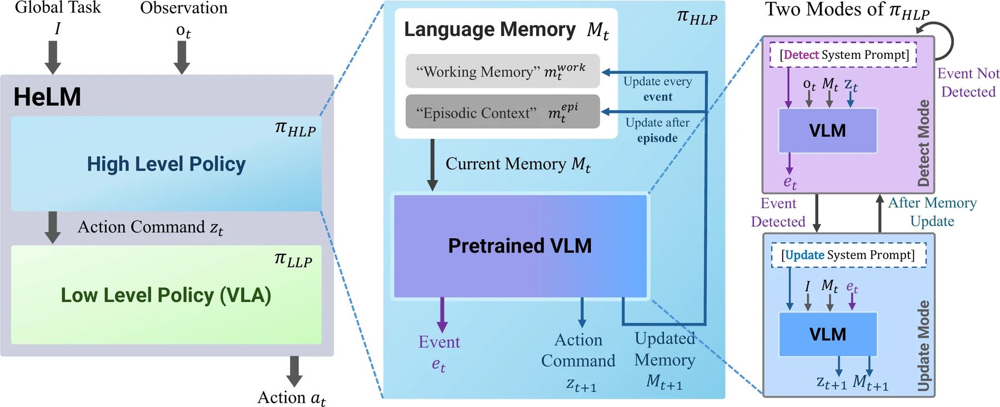
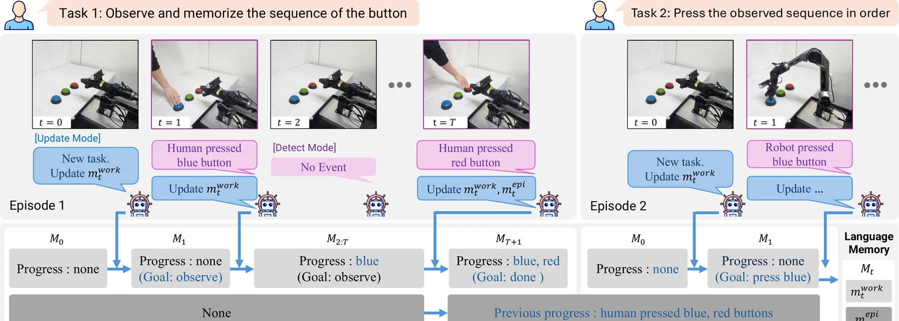
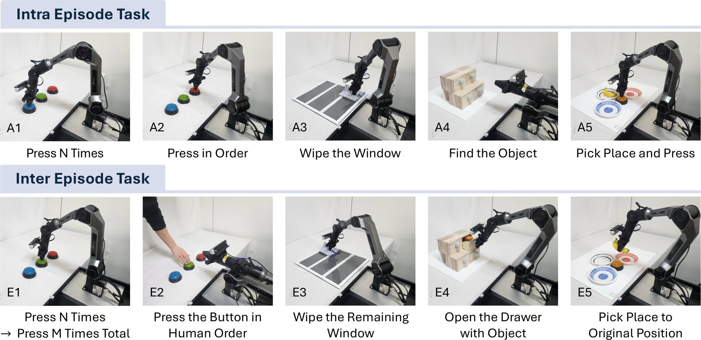
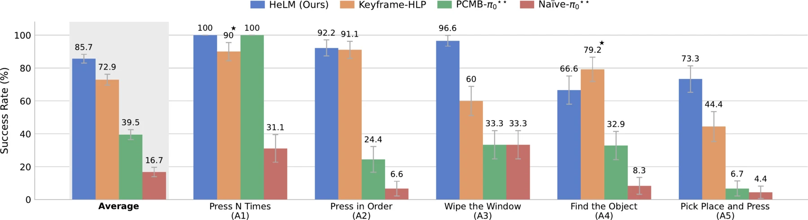
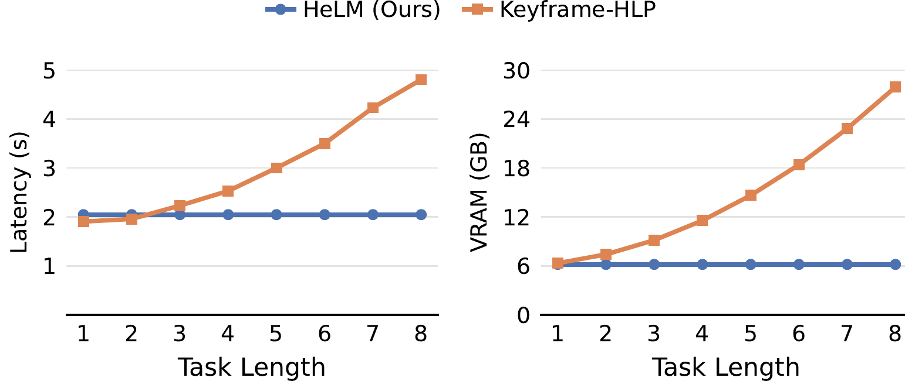

Recent advances in Vision-Language-Action (VLA) models have enabled fine manipulation capabilities, yet performing tasks that require working memory remains a key challenge. Most existing VLA architectures operate under a Markovian assumption, mapping only the current observation to an action, which leads to failure in non-Markovian environments.
Inspired by the human inner monologue, we propose Hierarchical Explicit Language Memory (HeLM), a hierarchical framework that establishes explicit language as a memory representation for VLA-based manipulation, with a working-episodic structure and event-triggered updates.
We evaluate HeLM across 10 non-Markovian real-world tasks with 51 variants, including five newly introduced inter-episode tasks that require persistent context across task boundaries. HeLM outperforms baselines by 13% on average and achieves 78% on zero-shot tasks, while being up to 4.5× more computationally efficient and 2.5× lower in latency than the keyframe baseline.
Framework walkthrough and real-world inference examples.
HeLM decouples semantic memory management from action generation through a two-level hierarchy.

The memory Mt is split into two components, organized by how long they persist. Because the memory is plain text, every state the policy relies on is directly inspectable.
Tracks active progress within a single instruction. Updated whenever a visual event is detected.
Count: 2 (Goal: 3) Progress: blue, green (Goal: blue, green, red)
Preserves summarized information across task boundaries. Promoted from working memory at the end of each episode.
Previous_Count: 3 Previous_Progress: blue, green, red
Unlike prior approaches that update memory at every observation, HeLM only writes to memory when a
semantic event fires. Both modes share the same VLM parameters and are distinguished by their
system prompts. Detect mode emits a task-relevant event token or none;
update mode runs only when an event is detected or the global instruction changes. This
filters out redundant updates from visually similar frames and prevents drift in the memory state.

10 real-world tasks with 51 variants, isolating count-dependent, order-sensitive, and object-centric memory challenges under controlled visual conditions.

Mean success rate per task over 15–30 trials (3–6 variants, 5 trials each), scored as the proportion of correctly executed subtasks.

| Method | E1 | E2 | E3 | E4 | E5 | Avg. |
|---|---|---|---|---|---|---|
| HeLM (Ours) | 90.5 | 87.7 | 90 | 80 | 97.7 | 89.2 |
| Keyframe-HLP | 27.6★ | 0 | 33.3 | 0 | 22.2 | 16.6 |
★ Keyframe-HLP fails to detect termination. PCMB-π0 and Naïve-π0 are excluded here: they reset internal state at episode boundaries and have no mechanism for cross-episode context.
The LLP is fine-tuned to execute specific action commands, but the HLP receives no task-specific finetuning for these compositions — e.g. counting to five when training only covered up to three, or grounding an object never seen during training.
| Method | A1′ | A2′ | A3′ | A4′ | A5′ | Avg. |
|---|---|---|---|---|---|---|
| HeLM (Ours) | 100 | 95 | 67 | 67 | 61 | 78 |
| Keyframe-HLP | 100★ | 63.9 | 77.8 | 38.9★ | 48.1★ | 65.7 |
★ Keyframe-HLP fails to detect termination in A1′, A4′, and A5′.
A trial counts as successful only if all subtasks complete, in the correct order, with proper termination. Baselines collapse to near-zero, revealing order and termination failures that the subtask-level metric does not penalize.
| Method | A1 | A2 | A3 | A4 | A5 | Avg. |
|---|---|---|---|---|---|---|
| HeLM (Ours) | 100.0 | 87.8 | 96.6 | 66.7 | 55.6 | 81.3 |
| Keyframe-HLP | 0.0 | 86.7 | 20.0 | 0.0 | 40.0 | 29.3 |
| PCMB-π0 | 0.0 | 2.2 | 0.0 | 0.0 | 0.0 | 0.4 |
| Naïve-π0 | 0.0 | 2.2 | 0.0 | 0.0 | 0.0 | 0.4 |
HeLM is initially slower due to autoregressive text generation, but becomes 2.5× faster than Keyframe-HLP at long horizons — a crossover driven by accumulating visual tokens. Keyframe-HLP consumes about 28 GB of VRAM for an 8-event episode, while HeLM stays under 6 GB.

As a complement to the real-robot experiments, we ran HeLM on the LIBERO-Mem benchmark against published memory-augmented baselines. We report these as exploratory evidence — see the paper for benchmark limitations we observed.
| Method | T1 | T2 | T3 | T4 | T5 | T6 | T7 | T8 | T9 | T10 | Avg. |
|---|---|---|---|---|---|---|---|---|---|---|---|
| HeLM (Ours) | 75.0 | 60.0 | 75.0 | 55.0 | 65.0 | 25.0 | 45.0 | 10.0 | 85.0 | 90.0 | 58.5 |
| π0.5 | 50.0 | 80.0 | 15.0 | 20.0 | 15.0 | 5.0 | 0.0 | 5.0 | 85.0 | 90.0 | 36.5 |
| Naive E-SlotSSM | 50.0 | 0.0 | 33.3 | 0.0 | 14.3 | 0.0 | 0.0 | 0.0 | 30.0 | 20.0 | 14.8 |
| SlotVLA (h=8) | 50.0 | 0.0 | 0.0 | 0.0 | 0.0 | 0.0 | 0.0 | 0.0 | 0.0 | 0.0 | 5.0 |
| π0 (h=1) | 50.0 | 0.0 | 0.0 | 0.0 | 0.0 | 0.0 | 0.0 | 0.0 | 0.0 | 0.0 | 5.0 |
Baseline rows for π0, SlotVLA, and Naive E-SlotSSM are taken from the LIBERO-Mem paper.
@inproceedings{helm2026,
title = {HeLM: Hierarchical Explicit Language Memory for Non-Markovian Manipulation},
booktitle = {Conference on Robot Learning (CoRL)},
year = {2026}
}